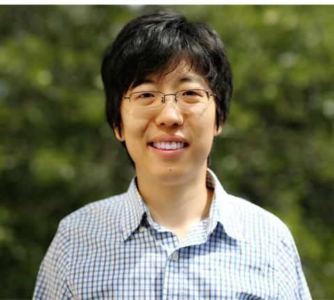

Department of Physics · Northeastern University
AI and data-driven design of quantum and energy materials
We combine physics-informed machine learning, symmetry, and first-principles computation to understand and design quantum and functional materials, from equivariant neural networks and generative inverse design to quantum defects in two-dimensional materials.

Associate Professor of Physics
Research directions
Symmetry-aware AI for solid-state quantum materials
We develop machine learning frameworks that build physical principles (point-group symmetry, equivariance, local bonding motifs, and exact physical constraints) into the network itself rather than learning them from data, for accurate, data-efficient and interpretable prediction for quantum materials.
AI-driven inverse design of functional and quantum materials
Moving from property prediction to design: symmetry-respecting, property-steered generative models coupled with first-principles validation in a closed loop.
Machine learning for electronic structure across scales
End-to-end and Hamiltonian-based learning of electronic structure, from simple crystals to large twisted and disordered systems.
Multilayer twisted quantum materials
Twisting stacks of three or more two-dimensional layers opens a vast design space of moiré superlattices whose flat bands, topology, chirality, and nonlinear optical responses are absent in the individual layers.
Data-driven design of quantum defects in 2D materials
Symmetry-guided, high-throughput discovery of point defects for qubits, single-photon emitters, and quantum sensors in atomically thin materials.
Disorder, alloys, and complex materials
Machine learning frameworks for configurational, chemical, and spin disorder in multicomponent alloys.
News
- New preprint: symmetry- and property-aware crystal generation with reinforcement learning (SPARC) for inverse materials design. Congratulations, Ting-Wei! →
- Qimin joins the Editorial Board of Journal of AI-Driven Materials Research.
- New preprints on point-group equivariant graph neural networks (Alex) and a multi-scale machine learning framework for coupled chemical, spin, and structural disorder in alloys (Zhenyao). →
- Qimin organizes the Principles and Applications of Symmetry in Magnetism (PASM) Summer School.
- Our perspective on the predictive design of quantum defects for next-generation quantum technologies is published in Communications Materials. Congratulations, Zhenyao! →
- The work on accurate prediction of tensorial spectra using equivariant graph neural networks (TSENN) is published in Nature Communications. Congratulations, Ting-Wei! →
About the PI
Dr. Qimin Yan is Associate Professor of Physics at Northeastern University, where he leads a research program on artificial intelligence and data-driven/computational design of quantum and energy materials. He received his Ph.D. in Materials from the University of California, Santa Barbara, and completed postdoctoral training at the Molecular Foundry, Lawrence Berkeley National Laboratory, and the Department of Physics at UC Berkeley. Before joining Northeastern in 2022, he was Assistant Professor of Physics at Temple University. He received the NSF CAREER Award (2022) and the DOE Early Career Award (2019).